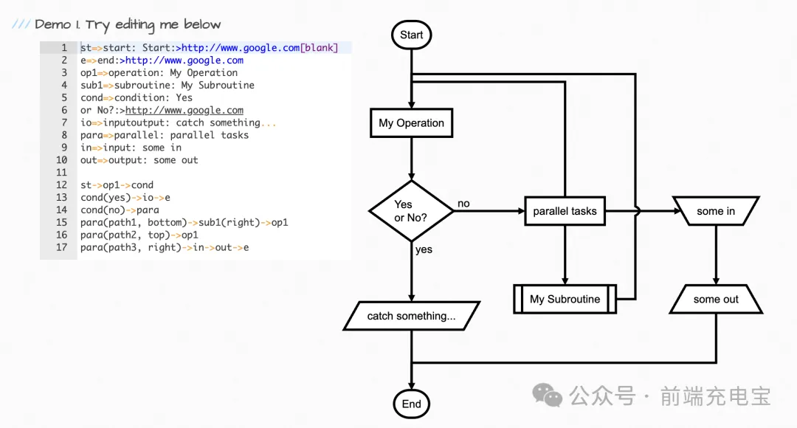

- 01 12 个 JS 动画库
- 02 es-toolkit
- 03 Fuse.js 轻量高效的模糊搜索库
- 04 Intro.js 神奇用户引导库
- 05 js 运算精度丢失，用这个库试试
- 06 Masonry.js 轻松实现瀑布流
- 07 NProgress.js 页面进度条
- 08 OpenCV 前端图片磨皮处理
- 09 Paper.js 一款神奇的 JavaScript 开源矢量图库
- 10 React Email 前端炫酷写邮件
- 11 Reveal.js 一款神奇的 JavaScript 开源演示框架
- 12 Slidev 新一代幻灯片制作工具
- 13 前端 js 动画库
- 14 前端图片压缩 js-image-compressor
- 15 前端实现人类动作捕捉
- 16 前端数据可视化常用工具大盘点
前端数据可视化常用工具大盘点
图表
ECharts
ECharts 是一个基于 JavaScript 的开源数据可视化库，它由百度开源，现在由 Apache 基金会维护。ECharts 提供了丰富的图表类型、灵活的配置选项和强大的交互功能，使得开发者能够轻松构建出美观且功能强大的数据可视化应用。

Github： https://github.com/apache/echarts
AntV
AntV 是蚂蚁集团旗下的一款强大的数据可视化解决方案。它提供了一系列的图表库和工具，旨在帮助开发者轻松地创建和管理复杂的数据可视化项目。AntV 的主要产品包括 Ant Design Charts、 G2、G6、X6、L7 等，这些产品支持多种图表类型，如折线图、柱状图、饼图、散点图、地图等，同时也提供了丰富的交互功能和定制选项。

Github： https://github.com/antvis
VChart
VChart 是字节跳动开源可视化解决方案 VisActor 的核心图表组件库。它基于可视化语法库 VGrammar 和渲染引擎 VRender 进行封装，在满足数据呈现的同时，还支持面向叙事场景的动画编排、丰富的交互能力和定制化的图表风格，简单易用的配置大大降低了用户的学习成本。

Github： https://github.com/VisActor/VChart
Chart.js
Chart.js 是一个基于 HTML5 的 JavaScript 图表库，它通过 Canvas 元素创建美观的图表，支持多种常见的图表类型，如折线图、柱状图、饼图等。它的设计理念是简单易懂，让开发者能够快速上手，同时保持足够的灵活性，满足各种需求。
Github： https://github.com/chartjs/Chart.js
BizCharts
BizCharts 是由阿里巴巴开源的一个基于 G2 封装的 React 图表库，具有 G2、React 的全部优点，可以让用户以组件的形式组合出无数种图表;并且集成了大量的统计工具，支持多种坐标系绘制，交互定制，动画定制以及图形定制等等。

Github： https://github.com/alibaba/BizCharts
shadcn/ui
Shadcn/ui 是一个爆火的现代 UI 组件集合，它并不是传统意义上的组件库或 UI 框架，而是一个提供可复用组件的集合，允许开发者通过复制粘贴的方式将组件源代码直接集成到项目中，最近它推出了 Recharts 的图表组件，简单精美，易于使用。

Github： https://github.com/shadcn-ui/ui
图形
Fabric.js
Fabric.js 是一个开源的 JavaScript 图形库，用于在 HTML5 Canvas 上进行交互式的对象模型操作和渲染。它简化了在 Canvas 上绘制图形、文本、图像和其他视觉元素的过程，并提供了丰富的交互功能，如选择、拖动、缩放、旋转等。

Github： https://github.com/fabricjs/fabric.js
konva.js
Konva.js 是一个基于 HTML5 Canvas 的高性能 2D JavaScript 图形库，提供丰富的 API 和灵活的图层管理功能，用于实现复杂的图形交互和动画效果。

Github： https://github.com/konvajs/konva
PixiJS
PixiJS 是一个开源的 2D WebGL 渲染器，同时也支持 Canvas 渲染。它是一个高性能、轻量级的 JavaScript 库，用于创建具有复杂图形、动画和交互性的 Web 应用。PixiJS 广泛应用于游戏开发、广告和互动内容等领域。

Github： https://github.com/pixijs/pixijs
地图
AntV-L7
L7 是由蚂蚁金服 AntV 数据可视化团队推出的基于 WebGL 的开源大规模地理空间数据可视分析开发框架。L7 中的 L 代表 Location，7 代表世界七大洲，寓意能为全球位置数据提供可视分析的能力。L7 以图形符号学为理论基础，将抽象复杂的空间数据转化成 2D、3D 符号，通过颜色、大小、体积、纹理等视觉变量实现丰富的可视化表达。

Github： https://github.com/antvis/L7
Leaflet.js
Leaflet 是一个轻量级开源 JavaScript 库，专为移动友好的交互式地图设计。它的大小仅为约 42KB，但包含了大多数开发者所需的地图功能。Leaflet 注重简单性、性能和易用性，能够在所有主流桌面和移动平台上高效运行。此外，它还可以通过大量插件进行扩展，拥有美观、易用且文档齐全的 API。

Github： https://github.com/Leaflet/Leaflet
3D
Three.js
Three.js 是一款基于 WebGL 的开源 JavaScript 库，旨在简化在网页上创建和显示 3D 图形的过程，使得即使是没有深厚图形学背景的开发者也能轻松上手。Three.js 通过提供一系列高级 API，隐藏了 WebGL 的复杂性，使得开发者可以专注于创意和逻辑实现，而不是底层的图形渲染细节。

Github： https://github.com/mrdoob/three.js
React Three Fiber
React Three Fiber 是一个用于 React 的 Three.js 渲染器，它允许开发者使用 React 的声明式编程范式来创建和控制 3D 图形。这个库旨在将 React 的易用性和 Three.js 的强大 3D 渲染能力结合起来，使得在 Web 应用中构建复杂的 3D 界面变得更加简单和直观。
Github： https://github.com/pmndrs/react-three-fiber
基础
D3.js
D3(Data-Driven Documents)是一个 JavaScript 库，用于使用 Web 标准将数据可视化。D3 可以使用 SVG、 Canvas 和 HTML 将数据变为现实。D3 将强大的可视化和交互技术与数据驱动的 DOM 操作方法相结合，让你拥有现代浏览器的全部功能，并可以自由地为数据设计合适的可视化界面。

Github： https://github.com/d3/d3
其他
流程图
Mermaid
Mermaid 是一个基于 JavaScript 的开源工具，用于在 Markdown 文档中绘制流程图、序列图、甘特图等图表。它允许开发者通过简单的文本描述来定义图表的结构，然后将这些描述转换为 SVG 格式的图形。
Github： https://github.com/mermaid-js/mermaid
React Flow
React Flow 是一个基于 React 的可视化工作流库，它主要用于构建和渲染流程图、工作流程、数据流图等可视化图表。React Flow 提供了丰富的功能和灵活的扩展性，可以帮助开发者快速构建出高质量的可视化工作流应用。

Github： https://github.com/xyflow/xyflow
flowchart.js
Flowchart.js 是一个基于 JavaScript 的开源库，用于在网页上绘制流程图。它允许开发者通过简单的文本描述来定义流程图的结构，然后将这些描述转换为 SVG 格式的图形。
Github： https://github.com/adrai/flowchart.js
甘特图
Frappe Gantt
Frappe Gantt 是一个用于生成甘特图的 JavaScript 库，支持交互式绘制、拖拽、缩放、任务依赖关系和时间刻度等功能。
Github： https://github.com/frappe/gantt
gantt-task-react
gantt-task-react 是一个基于 React 和 TypeScript 的交互式甘特图组件。它允许用户快速创建美观、可交互的甘特图，并提供了各种配置选项，使得开发者可以自定义甘特图的背景色、时间刻度、任务栏等样式。
Github： https://github.com/MaTeMaTuK/gantt-task-react
Vue Ganttastic
Vue Ganttastic 是一个基于 Vue 3 的简单、交互式且高度可定制的甘特图组件。它可以在 Web 应用中展示任务和进度，支持拖拽、缩放和事件处理等交互特性。
Github： https://github.com/zunnzunn/vue-ganttastic
词云图
wordcloud2.js
wordcloud2.js 是一个基于 JavaScript 的词云生成库，它允许开发者通过简单的配置项快速生成词云图。词云图是一种数据可视化形式，它将文字按照出现的频率进行排列和展示，使得高频词汇更加突出。

Github： https://github.com/timdream/wordcloud2.js
echarts-wordcloud
echarts-wordcloud 是基于 echarts 的一个词云库，用于在 echarts 可视化图表中创建词云。它能够和 echarts.js 完美融合，使用起来非常方便，支持自定义词云的颜色、形状、布局和样式等多种设置。

Github： https://github.com/ecomfe/echarts-wordcloud
d3-cloud
d3-cloud 是一个基于 D3.js 的 JavaScript 库，用于生成词云图。